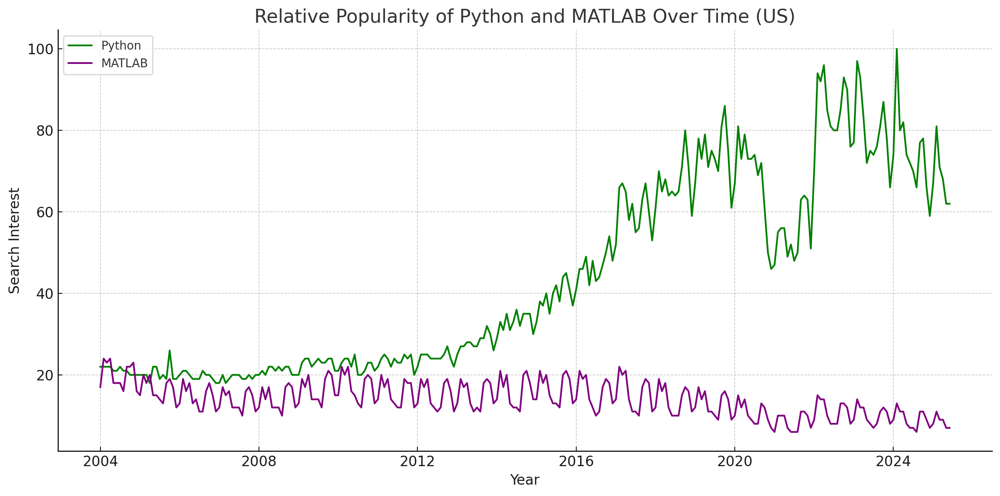
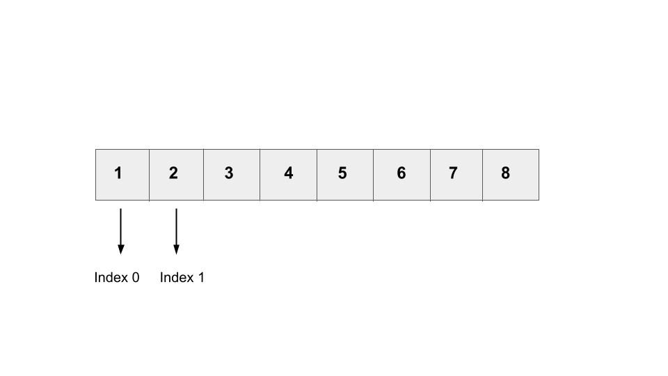

6 Basic Scripting
Programming Languages
How do you tell a computer to do something?
A programming language allows humans to write commands that instruct a computer to accomplish a task. There are both “low level” and “high level” programming languages. Generally, a “low level” language can be thought of as a programming language that gives directions directly to a computer’s hardware. Lower level programming languages aren’t as understandable or readable as higher level languages are. These languages are not used for data analysis. Instead, we as programmers, use high-level languages that are then recognized by a computer, translated into what is known as machine language (a low-level language), and interpreted by said computer to execute the command.
Some of the most common high level languages used in cognitive neuroscience are Python, Matlab and R. Each of these languages are capable of doing most of the tasks required in cognitive neuroscientists workflow, and some labs specialize in one language for simplicity. Each high-level language that we mentioned above excels in certain parts of our workflow, so in our lab, we tend to use them in combination.
Python
Python is a programming language known for its simplicity and readability. Programmers appreciate Python because it runs on an interpreter system, which allows for rapid testing and iteration without a separate compilation step. When an error occurs, Python raises an exception rather than abruptly terminating the program. If the exception is not handled, the interpreter provides a stack trace to help identify the issue, simplifying the debugging process. Python is widely used in web and software development, data analysis, machine learning, and system scripting. The libraries embedded into the system, such as NumPy for matrices and multidimensional arrays, SciPy for scientific computing, and Matplotlib for data visualization, are specifically helpful for scientific computing. Its syntax is designed to be intuitive, being similar to the English language, making it accessible to both beginners and experts.
MATLAB
The Matlab language is a high-level language, optimized for working with matrices and arrays. EEG data is stored in matrices (EEG channels X time points), and digital images are also matrices, making Matlab an optimal tool for analyzing and performing tasks on this data. Up until around 15 years ago, Matlab was the only software that could efficiently perform operations on such matrices. With the advent of libraries like the Numpy Python library, Matlab has become less popular for doing such tasks because there is an open source alternative.

(VCL, 2025) from Google Trends data.R
R is a programming language designed for statistical computing and data visualization. It is commonly used in research for tasks such as statistical modeling, data analysis, and numerical calculations. R is open-source and platform-independent, meaning it can be used on any operating system without licensing fees. It also supports integration with other languages, including C and C++. R’s functionality can be extended through the Comprehensive R Archive Network (CRAN), which hosts thousands of user-contributed packages.
Integrated Development Environments (IDEs)
An IDE (Integrated Development Environment) is a software platform that streamlines the coding process for programmers by providing tools to edit, build, and test software all in one place. For scientific data analysis, IDEs are also helpful for being able to interactively see code and its output, such as a scientific plot. IDEs simplify programmers’ work by offering features like syntax highlighting, automated tabulation, and debugging features. For example, if there is a syntax error in the code, the IDE will identify the mistake, similar to when Word puts a red or blue line on specific words and phrases. Some IDEs even offer varying levels of code automation where the environment automatically fills in code as the programmer types. If you imagine a programming language as analogous to the English we speak, an IDE is like Microsoft Word. It is an application, with various checkpoint features, in which we write our code. Matlab comes packaged with its own IDE. RStudio is the most popular IDE for the R programming language. Python programmers have several options for IDEs. While discussions of “best Python IDE” are frequent online, our view is that the best IDE is one that you like to use. We tend to use Spyder because it is packaged with Anaconda, is easy to learn, and is similar to the IDEs of RStudio and Matlab.
Defining Variables
Variables are used to store information that a computer program can reference or modify throughout a script. Think of a variable as a storage bin. Assigning a value to your variable is akin to putting things inside that storage bin. There are also instances where you are able to “take out” items from that storage bin. In programming, it’s important to choose variable names deliberately so that your code is easily understood by the reader.
In Python, a variable is created the second that you assign it to a value using a = sign. Unlike some other languages, like Java, variables do not need to be declared as a data type (such as int, string etc). The term int simply means the variable is an integer (i.e. a whole number), whereas str means that the variable is a string (i.e. a sequence of characters). Python allows programmers to change the type of a variable even after it has been set.
Example:
Explanation: The first line is assigning the variable x to an int equal to 5. The second line then reassigns the variable x to a new value, Hello World. We know that Hello World is a str because we use “” to define the value.
If a programmer is interested in knowing the data type of a specific variable they can call the type() function.
Example:
Explanation: Since x was most recently assigned to be a string data type, the output would be str.
Note: It is important to note that variable names are case sensitive. X is different from x.
Indentation
Indentation is important when it comes to all programming languages. It demonstrates hierarchical relationships between different code blocks and allows organization of code by visually separating different functionalities through the use of the tab button. In Python, in order to define statement blocks, indentation in the correct format consistently is required or else code will not run properly. An IDE will flag a line of code if it is improperly indented. Regardless of the programming language, proper indentation makes code more readable and easier to debug. When starting a block of code, note that indentation is not enabled on the first line in a Python script. Think of this as the main title that should stick out to the most leftist side. Additionally note that mixing tabs and whitespaces in indentation can result in errors so it is important to stay consistent.
Example:
Explanation: Both the print statements are indent with a tab because they each fall under their respective condition. Meaning, if the first line that is not indented is correct,then it will move on to what is indented directly underneath it. Otherwise, if the first line that is not indented is not correct, it will move to the next non-indented line, and so on.
Operators: Logical Operators
Logical operators are symbols such as and (&&), or (||), and not (!). They allow individual expressions to be combined into compound expressions, where the outcome depends on the logic defined by these operators. These operators combine Boolean expressions (expressions that are either true or false) to output a single Boolean answer - either true or false.
There are three logical operators in Python (and in other programming languages):
and: The and operator returns True if both statements in the compound expression are true.
Example:
Explanation: If x is greater than 5 and x is greater than 6, the output is True. If at least one statement in the compound is false, it would return false. In the case of the above example, the output is “True”.
or: The or operator returns True if at least one of the statements in the compound expression is true.
Example:
Explanation: If x is equal to 5 or less than 5, the output is “True”. If neither of these conditions are true it would return false. In the case of the above example, the output is True as 2 is less than five.
not: The not operator returns the reverse of the result from the conditional statement
Example:
Explanation: If the condition is True, the not operator makes it False. If the condition is False, the not operator makes it True. In the case of the above example, a < b is True (6 is less than 8), but the not operator inverts it to False. Therefore, the else block runs and the output is “a is less than b”.
Operators: Arithmetic Operators
The basic arithmetic operators in programming languages are addition, subtraction, multiplication, division, and modulus. The modulus operator, represented by the % symbol, calculates the remainder of a division problem.
Python contains the following operators: addition (+), subtraction (-), multiplication (*), division (/), exponentiation (**), modulus (%), floor division (//).
Example: +
Example: -
Example: *
Example: /
Example: **
Example: %
Note: 24 divided by 5 gives a remainder of 4.
Example: //
Note: 10 divided by 3 is 3.33, but floor division rounds down to 3
Operators: Comparison Operators
Comparison operators compare values and return a Boolean expression (either true or false) depending on the outcome of the comparison. These operators are: > (greater than), < (less than), >= (greater than or equal to), <= (less than or equal to), == (equal to), and != (not equal to).
Example: ==
Example: !=
Example: >
Example: <
Example: >=
Example: <=
Data Types
Each variable that a programmer creates in a script has a specific data type. The data type acts as a tag that indicates to the computer’s compiler how the programmer intends to use the data defined in the variable. Each programming language supports several different data types.
Primitive data types are the fundamental building blocks of computing, similar to atoms in chemistry—they form the foundation of all other data types. These include predefined types such as strings (text), integers (numeric values), Booleans (binary true/false values), and lists (mutable (i.e., changeable) arrays of objects). It is important to note that there are many other data types beyond what is mentioned here. However, for the sake of simplicity, these are some of the most common ones that will be encountered.
Below are examples of how these data types are written in Python along with the groups that they are categorized into. Some of the data types listed below are not used as frequently as others, so mostly just pay attention to the ones that were mentioned above.
The standard data types in Python are the following:
Text type: str
Numeric types: int, float, complex
Sequence types: list, tuple, range
Mapping type: dict
Set types: set, frozenset
Boolean type: bool
Binary types: bytes, bytearray, memoryviewExamples of how these data types would appear in Python:
This is a string (str).
This is a integer (int).
This is a Boolean.
Boolean
A Boolean is an interesting data type because it can only have one of two values: true or false. These values represent binary logic and can be compared to concepts like: an on/off switch, yes/no answers, or even true/false statements. Booleans are frequently used with logical operators as they serve as a simple way for programs to make decisions. For example, a programmer might want to run a program that helps to decide whether they should fill up a tea kettle or not. If the kettle is empty (true), the program will respond by filling it. Booleans are also commonly represented as 1 (true) and 0 (false).
Example:
String
A string is a sequence of characters that represents text. This text is typically a word, phrase, or sentence. In addition, a string can also be numbers, special characters, or spaces. In Python (and in many other programming languages) a string is established by wrapping ‘single’ or “double quotes” around the desired characters. Unlike lists or arrays, strings are immutable, meaning their content cannot be changed after their instantiation (creation). If one wanted to change/modify a string, they would need to create a new one. In contrast, lists and arrays are mutable, meaning they can be changed directly.
Examples:
Data Structures
Data structures are the foundation of computer programming. They determine how data are organized, stored, and changed within a program. The purpose of a data structure is to store data in a way that is easily accessible for the computer and programmer.
Array
An array is one of the most common and useful data structures that you’ll encounter in programming. It stores a collection of elements in a continuous block of memory, with each element labeled by its index (a number that denotes its location within the array). You can think of an array as a dynamic list: each element within the list can be taken out, changed, substituted, or removed.
This structure allows for efficient access to elements and provides flexibility for programmers to manipulate arrays as needed. Additionally, arrays allow for arithmetic manipulation of the elements inside of the array. This makes arrays ideal for tasks involving numerical data or structured lists of items.
An array can hold multiple values or items in a single variable. For example, if you wanted to create a variable called students to store the names of all the students in your class, an array would be the perfect data type for this. You can perform various operations on an array, such as iterating through it, getting its length, accessing specific items at specific indices, adding elements, and deleting elements.
Example:
All five of these student names are stored in one variable: students.
Array Indexing
Having the skills to navigate through and manipulate large sets of data is an important skill. With EEG data, there can sometimes be 3 dimensions that are being manipulated at a time, and being able to understand what data you are manipulating becomes essential with this kind of research(or in general as this crosses many disciplines).
Step 1.
One of the most important things to know in Python is that indexing or counting starts at 0, not at 1. This means that the 1st element in a list would be labeled to be at index 0. The second element would then be labeled to be at index 1 and so on. We call Python a “zero indexed” language for this reason. (Note that R and Matlab are “one indexed” languages that start counting at 1!)

(VCL, 2025)Step 2. To access an element from an array start by typing the name of the array and then following the name with square brackets. Let’s say I want to access the 1st element of the array (which would correspond to the 0th element in the array), inside the brackets I would put the position of that element which would be 0. If I wanted to access the 2nd element of the array I would insert 1 into the brackets.
Example:
Lists
Lists are common and flexible data structures that are used to store collections of items. Lists are similar to arrays in which they store elements by index and can be iterated through. However, unlike arrays, lists don’t support element-wise arithmetic operations, meaning that you aren’t able to directly multiply, divide, add, or subtract items within the list.
One of the strengths of a list is that you are able to store different kinds of data types: strings, integers, Booleans, and even other lists. This makes lists especially useful for general-purpose data storage where uniform data types aren’t required. When comparing lists to arrays, lists are more flexible but less practical for numerical computations. Example:
Conditionals
Conditionals are statements within a script that enable the execution of specific blocks of code based on whether certain criteria are met. They allow programs to make decisions and perform various actions depending on the state of a condition. The two main types of conditional statements are if-else statements and switch statements.
If-else statements are the most basic form of a conditional. The ‘if’ part of the statement checks whether a specific condition is true. If it is true, the program executes a certain set of actions; otherwise, it executes a different set of actions, which are specified in the ‘else’ part of the statement. Additionally, elif, standing for else-if is a statement that is run after an if statement, but before the default else (denoting all possible other situations).
A switch statement offers a list of possible outcomes and directs the computer to execute code based on the matching case.
if statements, elif, and else are the keywords used in python that indicate code decision making.
The if statement is used to test a condition. If the condition is true, the block of code under the if statement (indicated by proper indentation) will be executed. If the condition is false the code will not be executed.
Example:
Explanation: In the example code above, x is smaller than y, so the condition is false and nothing will be printed.
The elif statement is used in Python when the previous conditions in an if statement were false, and another condition needs to be checked. elif stands for “else if” and allows you to add multiple conditions to an if statement.
Example:
x = 2
y = 3
if x>y:
print(“x has a greater value than y”)
elif y>x:
print(“y has a greater value than x”)
elif y==x:
print(“y and x have the same value, they are equal”) Explanation: In the example above, the code begins by checking if x has a greater value than y. Since that condition is false (x is smaller than y) it moves onto the next check to see if y is greater than x. It will then print y has a greater value than x and the last elif will not be executed because the previous elif condition was true.
The else keyword handles any case that does not meet the preceding test conditions.
Example:
A real-world example is:
Explanation: Conditional logic in Python uses ‘if-else’ statements to help the program make choices. It checks if something is true (like “Is it raining?”) and decides what to do next (like “Take an umbrella” or “Leave it at home”)
Loops
Loops are an element of programming that allow certain parts of the code to be repeated a set number of times or as long as a certain condition is true. Loops are helpful because there is often lots of repetition in programming. The use of loops can minimize the amount of code needed to execute a command and can allow for there to be greater efficiency in the code.
In Python, you can create a for loop or while loop. A for loop is used to iterate over a sequence and execute a block of code for each item in the sequence.
Example:
Explanation: For each of the ages in the array called ages, the age plus one will be printed: 11, 12, 13
A while loop is used to repeatedly execute a set of statements until a condition is satisfied. The condition’s default is true, but once it becomes false the program exits the loop.
Example:
count = 0
while (count <5):
count = count +1 #alternatively you could write the syntax count += 1
print(count)Explanation: The output of the code will be 1, 2, 3, 4, 5 and then the code will stop.
Warning: Be careful with while loops - if they do not have a condition that would cause them to stop (such as if count was not increased in the example above), they would continue forever! This is known as the dreaded “infinite loop”.
Functions
In programming, functions are reusable blocks of code designed to perform specific tasks. Organizing code into functions is a best practice because it enables task repetition, promotes code reuse, and helps isolate variables within each function’s scope. This structure improves code readability, simplifies debugging, and makes programs easier to maintain and scale.
A typical script is divided into several different functions. Each function acts as a self-contained series of lines that performs a specific action, or series of actions. Throughout a script, a function can be called at different points. When a function is called, the program temporarily exits the current area of code and begins executing the first line of the called function. Once the function has finished executing, the program returns to the point in the script where it was before the function was called.
Functions help programmers break down complex tasks into smaller, more manageable sub-tasks, and test limited portions of code at a time.They also enhance efficiency in software development by allowing code reuse; instead of rewriting the same code, you can simply call the function. Similarly, instead of repeatedly explaining how to bake a cake to every chef, you just give them a recipe; the same way a function holds the instructions that can be reused whenever needed. Certain variables, known as local variables, only exist and are recognized by the compiler within the specific functions where they are defined. Example: Imagine you’re writing a script to process images by normalizing an image’s luminance and contrast. You might have several functions:
- One function called
image_luminancecould calculate the mean luminance for each image by analyzing pixel intensity values. - Another function called
image_contrastcould calculate the contrast of the image from pixel intensity values. - Finally, a third function called normalize_images would adjust the luminance and contrast of each image to match the reference (you could call your previous two functions on both your experimental and reference images to reuse code!)
This modular approach allows each function to focus on a single task, making the code easier to maintain, test, and update. Additionally, if the reference image or normalization method changes, you would only need to modify the relevant function without impacting other parts of the script. To define a function, use the “def” keyword, followed by the function name and parentheses.
Explanation: Function Definition (def): The keyword def starts the function definition. It tells Python that you’re defining a new function. - Function Name (compute_sum): The function name compute_sum is descriptive, suggesting that this function will calculate the sum of given numbers. - Parameters (x, y, z, b): These are the arguments passed to the function. They allow the function to receive inputs when it is called. In this case, x, y, z, and b are numbers that will be added together. - Computation (result = x + y + z + b): This line performs the actual operation. The function adds the values of x, y, z, and b and stores the sum in the variable result. - Return Statement (return result): The return statement specifies what the function will output when it is called. In this case, it returns the calculated sum stored in result. It is important to note that the return statement does not print out values to the console. If you want the value of result to be printed out to the console, ensure that you wrap what you want to be outputted to the console in a print statement. For example: print(result).
Comparison Table
This table translates all the Python concepts into two other languages: MATLAB and R.
| Concept | Python | MATLAB | R |
|---|---|---|---|
| Defining Variables | x = 5 |
x = 5 |
x <- 5 |
| Comments | # Inline comment in Python |
% Inline comment in MATLAB |
# Inline comment in R |
| Indentation | if x > 5:print("x is greater than 5")else:print("x is less than or equal to 5") |
if x > 5disp('x is greater than 5')elsedisp('x is less than or equal to 5')end |
if (x > 5) {print("x is greater than 5")} else {print("x is less than or equal to 5")} |
| Boolean | True, False |
true, false |
TRUE, FALSE |
| String | 'text' or "text" |
'text' |
'text' or "text" |
| Array | [1 2 3] |
[1 2 3] |
c(1, 2, 3) |
| List | newList = [1, 2, 3] |
newList = [1 2 3] |
newList <- list(1, 2, 3) |
| If Statement | if(condition): |
if condition |
if(condition) { } |
| Else If Statement | elif condition: |
elseif condition |
else if (condition) { } |
| Else Statement | else: |
else |
else { } |
| For Loops | for i in range(1,11) |
for i = 1:10 |
for (i in 1:10) { } |
| While Loops | while condition: |
while condition |
while(condition) { } |
| Defining Function | def example(): |
function y = example() |
exampleName <- function() { } |
| Operator Type | Python | MATLAB | R | Description |
|---|---|---|---|---|
| AND | and |
& |
&, && |
True only if both conditions are true |
| OR | or |
| |
|, || |
True if at least one condition is true |
| NOT | not |
~ |
! |
Inverts the truth value (true ↔︎ false) |
| Operation | Python | MATLAB | R |
|---|---|---|---|
| Addition | + |
+ |
+ or sum() |
| Subtraction | - |
- |
- |
| Multiplication | * |
* (matrix), .* |
* |
| Division | / |
/ |
/ |
| Remainder (Modulo) | % |
mod |
%% |
| Equal | == |
== |
== |
| Not Equal | != |
~= |
!= |
| Greater Than | > |
> |
> |
| Less Than | < |
< |
< |
| Greater Than or Equal | >= |
>= |
>= |
| Less Than or Equal | <= |
<= |
<= |
Further Reading
We recommend the following sources for more information on this topic:
Programming with Python The Software Carpentry
Plotting and Programming with Python The Software Carpentry
Programming with R The Software Carpentry
Comments
Commenting is the essential practice of adding human-readable explanations to lines of code. Proper commenting is crucial for creating code that is readable to other users and developers who may work on or build upon the script. It can also just be simply nice to have for your future-self in understanding your own complex code. It explains the functionality of the code in a way that can be understood without requiring knowledge of the exact programming language syntax. Different languages require different syntax for notifying the code editor that you as the developer are making a comment, not writing a line of code to be executed by the computer. Comments can also be used to temporarily prevent certain blocks or lines of code from running, which is helpful when testing sections of code and debugging. We call this practice “commenting out”.
In Python, there are two ways to add comments. The most basic method is to use the # symbol in front of the text you want to comment out. The # symbol comments out all text following it on the same line.
Example:
Explanation: The line with the hashtag is commented out so the act of 27+9 will NOT be executed. On the other hand, the last line if 27/9 WILL be executed because it is NOT a comment, thus the final output is “3.0”.
If you want to comment out a whole block of multi-line text, you can use triple-quoted string literals ““” before and after the text you want to comment out.
Example:
Explanation: All the text that falls in between the ““” sandwich will become a comment. That results in only the first two lines and the very last line being executed, thus the final output will be “jiji”.